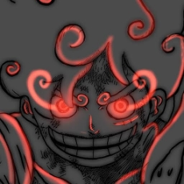

Servidor Discord
O servidor Discord é por onde nos comunicamos, avisamos sobre atualizações, eventos e sorteios que os membros podem participar, também é onde anunciamos os treinos para que os membros participem, além de ser palco importante para nossa animação e também para interações dos criadores com os membros.
Para entrar nele é bem simples, basta clicar em Server Discord que você será direcionado para a página de entrada do servidor. É importante lembrar que ao entrar no servidor você pode ou não ser exposto à palavrões leves, entretanto não é nenhum problema fazer o mesmo desde que não sejam ofensas à outros membros.
Lá você também pode receber alguns avisos e pequenos spoilers sobre a animação que está sendo produzida pelo criador e seu amigo, podendo saber de certas coisas que a maioria das pessoas que não estão no servidor não irão saber até o lançamento no Youtube.

Uma última coisa à acrescentar é que no servidor você terá a possibilidade de participar de vídeos do criador, e com sua permissão aparecer no mesmo e ser mencionado pelo criador. Oque está esperando corre e dá uma olhada lá!